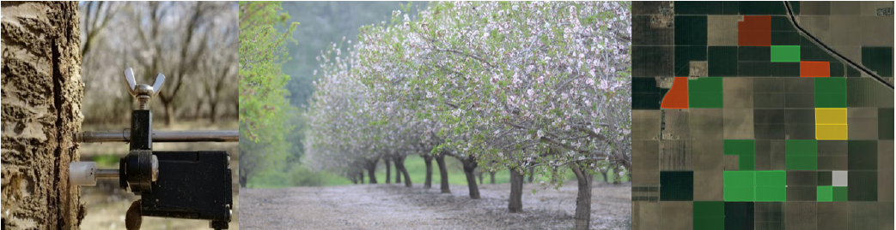

Demo
PhySod - About
About
High Level View
Outliers View
Class What If
Class Performance
Unsupervised Multivariate Anomaly Detection for
Data Integrity in Agricultural IoT Sensor Networks.

Efrat Vilenski, Peter Bak, Jonathan D. Rosenblatt
Dept. of Industrial Engineering and Management,
Ben Gurion University of the Negev, Israel